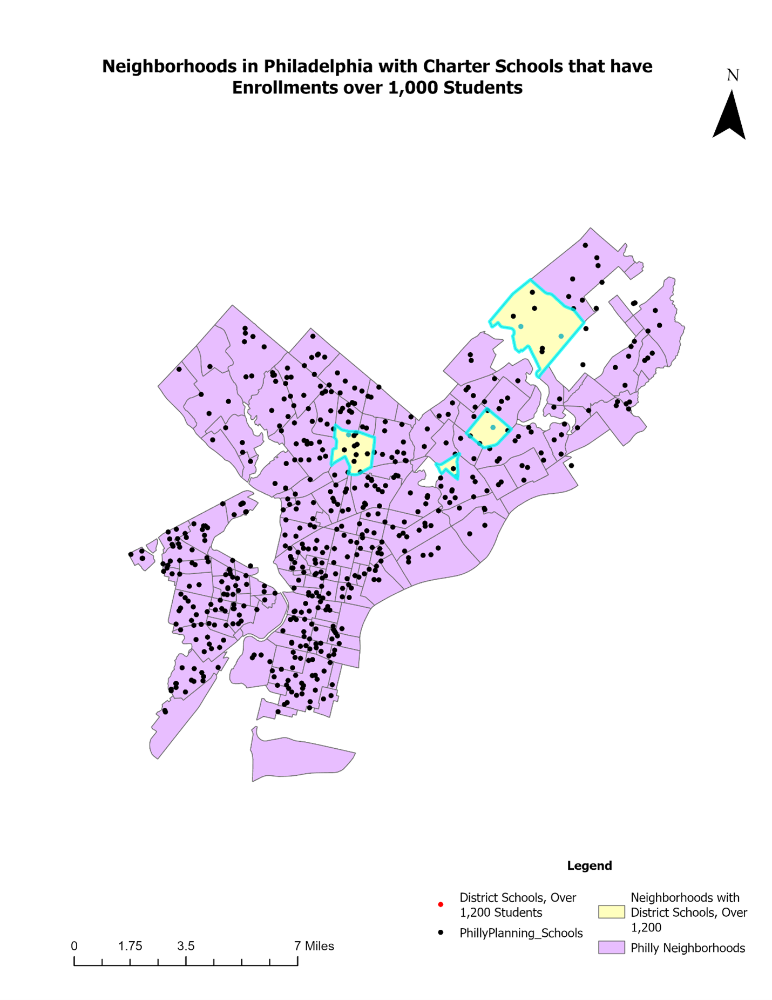

Problem
What neighborhoods contain Philadelphia School District schools that both enroll more than 1,200 students and are also within 0.1 mile of the bike network?
Solution
The following schools enroll more than 1,200 students and are also within 0.1 mile of the bike network:
- Baldi, C. C. A.
- Central
- Frank, Anne
- Frankford High School
- Solis-Cohen, Solomon
The following neighborhoods contain the schools:
`
- Bustleton
- Castor Gardens
- Logan
- Northwood
The following map highlights the Philadelphia District schools and neighborhoods enroll that more than 1,200 students and are also within 0.1 mile of the bike network:
Importance
Getting their child to school can be a big challenge for many families. For instance, their work schedule may not line up with the school start time or they may not have a working vehicle. Ensuring that schools are near bike networks, allows children to safely get to school on their own, provided they are old enough. This alleviates some of the burden on busy families. Also, commuting by bike is much more sustainable than driving a child to school, which is particularly important in large schools.
Creating maps and visualizations that highlight dangerous areas enables regulators to take appropriate actions and informs residents about the quality of their water.
Selected Skills
- Preparing and Managing the Project Ensuring that the project is set up for success and that files will not get lost or damaged.
I acquired skills in organization, workspace maintenance, and data management essential for executing a GIS project. It is imperative to consistently uphold these practices and integrate new components into the project systematically as it progresses. The significance of this skill became evident when my initial attempts at the lab did not yield the correct results. After experiencing frustration, I methodically reviewed my approach, ensuring greater organization, which ultimately led to achieving the correct solution.
- Using GIS Tools and Basic Queries Using Queries to sort, filter, and analyze data.
I learned basic queries like “sort by attribute” and “sort by location,” which helped me identify elements in Philadelphia such as bike lanes, neighborhoods, and schools. This enabled me to explore their relationships. To get the right information, consider how elements relate: are they contained within each other, do they intersect, or are they a certain distance apart? After identifying the relationship, I plan the necessary steps and queries.